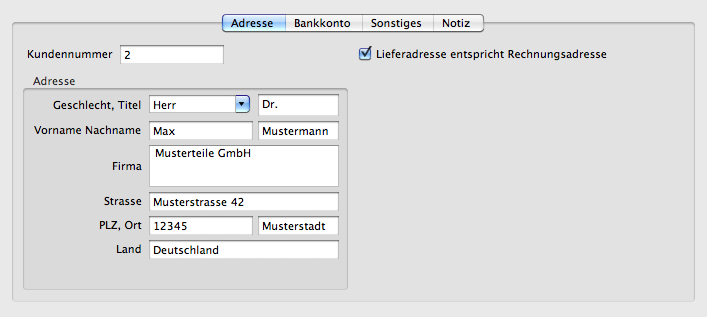
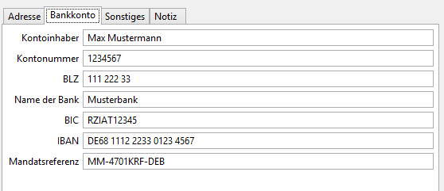
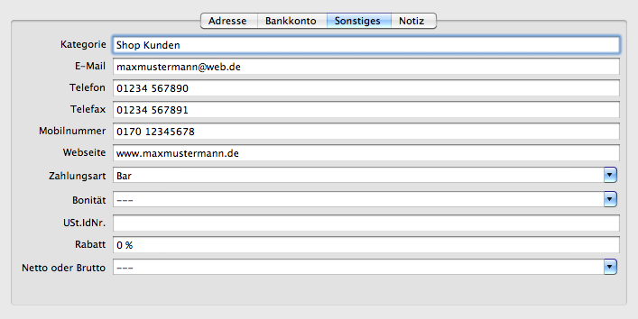
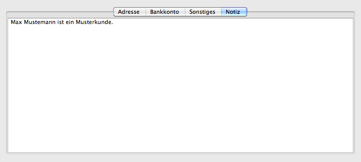

Legt das Erscheinungsbild des Kontakteditors fest. Einige Felder können ausgeblendet werden, um die Übersichtlichkeit zu erhöhen.
Falls die Rechnungsadresse und Lieferadresse bei jedem Vorgang übereinstimmen kann das Feld 'Lieferadresse' ausgeblendet werden.
Die Seite 'Bankkonto' kann eingeblendet werden, falls die Bankverbindung der Kunden hinterlegt werden soll.
Die Seite 'Sonstiges' kann eingeblendet werden, falls zusätzliche Informationen hinterlegt werden sollen.
Die Seite 'Notiz' kann eingeblendet werden, falls zusätzliche Notizen hinterlegt werden sollen. Ist eine Notiz hinterlegt, wird die Seite beim Aufruf einer Adresse im Vordergrund angezeigt.
Siehe auch Kontakteditor